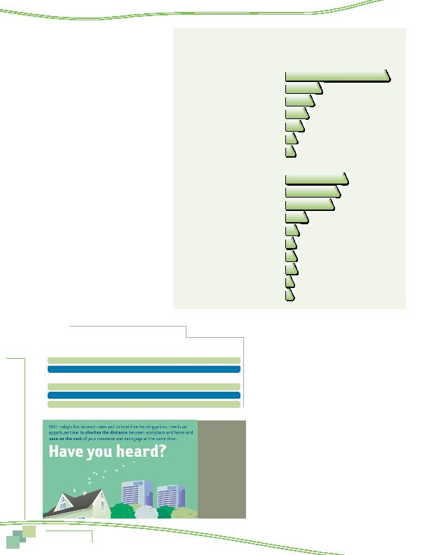

|

on e Comm because the origin and/or destination of the commute changed, all respondents were asked if they had made a change in their work location and/or home location in the past year. Table 1 displays results of commute ease for respondents who did and did not make a move. moved within the Washington metropolitan region. The other 24% moved from a location outside the Washington area. Because those who moved from outside the region could not provide a before-the-move comparison, they were excluded from the base for Table 1. appears to have been related to moves for at least some of the respondents. The majority (67%) of respondents who did not move said their commutes were about the same. Nine percent said their commute had improved and about a quarter (24%) said it had gotten more difficult. mute. But almost as large a share (29%) said higher than the percentage of respondents who had an easier commute without a move. This suggests that the move might have played a role in either improving or worsening a commute, but that the move improved the commute as often as it worsened it. only, work only, or both home and work. The differences between responses for these groups are small and within the statistical margin of error. jobs at least in part because they wanted to make their commute easier or less costly. Several questions were included in the SOC survey in 2007 to examine if commute factors had an influence on regional residents' home or work location decisions. Respondents who said they had made a change were asked what factors they considered in making the change and how important to their decision the ease of the trip to work was compared to other factors (33%) of respondents who moved said they had a more difficult commute. |